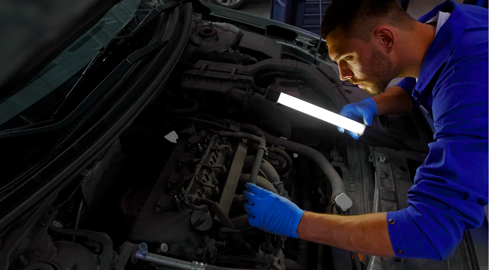
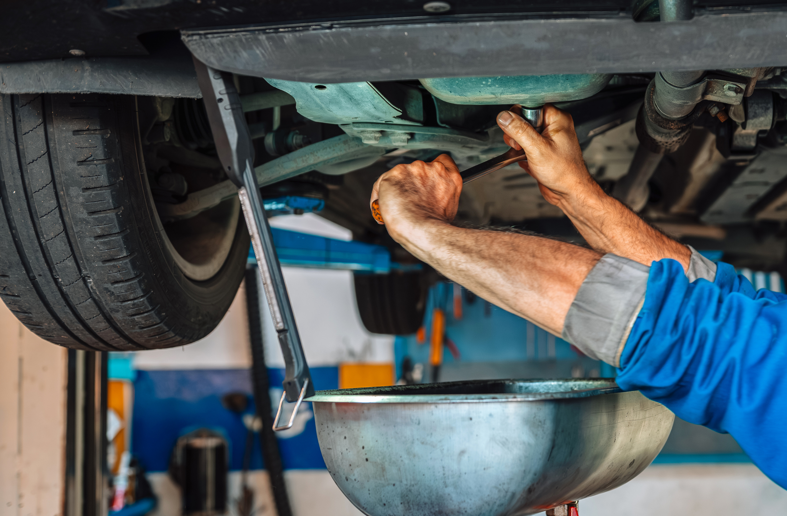
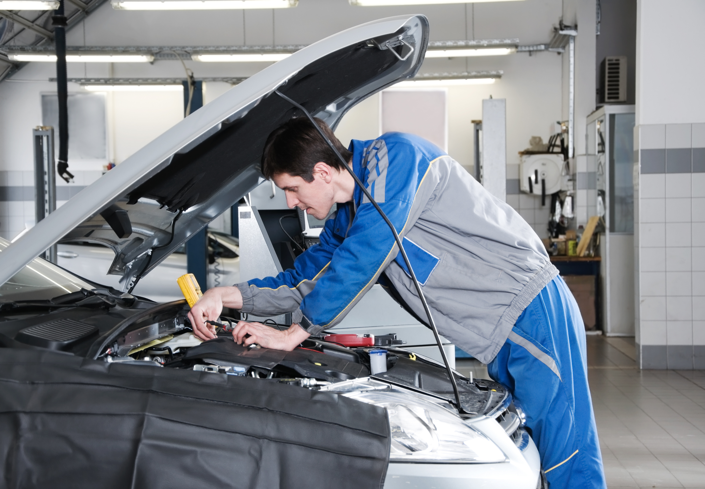

Pouzdan auto servis koji pruža brzu i kvalitetnu uslugu održavanja i popravke vozila. Naš tim stručnih majstora koristi savremenu dijagnostiku i originalne delove kako bi tvoje vozilo bilo bezbedno i spremno za vožnju. Nudimo redovan servis, zamenu ulja i filtera, popravke motora, kočnica i elektrike – sve na jednom mestu.
Naš auto servis pruža kompletnu brigu o vašem vozilu kroz redovne i specijalizovane usluge. Mali servis obuhvata zamenu ulja i filtera, kao i osnovnu kontrolu vozila, čime se obezbeđuje pouzdan rad motora i sigurnost u vožnji. Zamena ulja se radi sa pažljivo odabranim kvalitetnim uljima i filterima, kako bi motor imao optimalno podmazivanje i dug vek trajanja.
Za dugoročnu sigurnost tu je veliki servis, koji uključuje zamenu zupčastog kaiša ili lanca, rolera, španera, pumpe za vodu i svih pratećih delova – ključna intervencija koja sprečava ozbiljne kvarove motora. Pored toga, nudimo i punjenje i servis klima uređaja, dopunu gasa, proveru sistema i dezinfekciju, kako bi vožnja bila prijatna i bezbedna tokom cele godine.


Posebnu pažnju posvećujemo održavanju motora, kroz redovnu dijagnostiku, kontrolu performansi i zamenu istrošenih delova.
Naš tim stručnjaka brine i o elektrici vozila – akumulatoru, alternatoru, rasveti i elektronskim sistemima, obezbeđujući pouzdan rad svih komponenti. Takođe, vršimo detaljnu kontrolu i popravku kočionog sistema, uključujući diskove, pločice, kočione cilindre i ABS sisteme, jer je bezbednost u vožnji uvek na prvom mestu.
Naš auto servis postoji više od 20 godina i tokom tog vremena izgradili smo reputaciju pouzdanog partnera za sve vozače. Dugogodišnji rad, iskustvo i posvećenost kvalitetu omogućili su nam da pružimo usluge koje garantuju sigurnost i dug vek vašeg vozila.
Naš tim stručnih majstora koristi savremenu dijagnostiku i originalne delove, a svaka intervencija se obavlja pažljivo i profesionalno. Bilo da je u pitanju redovan servis, popravka motora, elektrike ili kočionog sistema – kod nas ste uvek u sigurnim rukama.
Više od dve decenije poverenja naših klijenata najbolja su potvrda da smo servis na koji se možete osloniti svaki dan.
Ukoliko želite da zakažete termin ili postavite pitanje, popunite naš kontakt formular. Potrebno je da unesete svoje ime, email adresu i kratak opis problema sa vozilom. Takođe, možete odabrati željeni termin za servis. Naš tim će obraditi vaš zahtev i kontaktirati vas putem emaila radi potvrde termina i dodatnih informacija. Na ovaj način obezbeđujemo brzu i pouzdanu komunikaciju, kako bi vaše vozilo bilo servisirano u najkraćem roku.